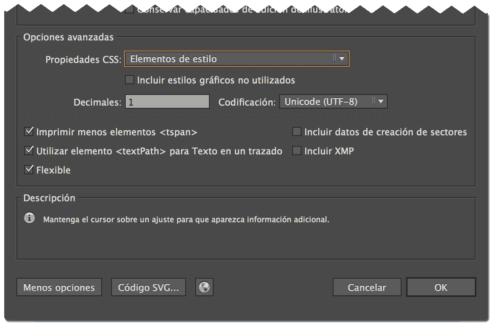

Optimización de imágenes
Hola, soy Nahuel Sotelo
Frontend developer en Schibsted Spain y Profesor de la asignatura Programación Frontend en el Master de Diseño Web de Bau.
Contenidos
- Introducción
-
Bitmap
- Tipos de compresión
- Formatos bitmap
- Optimización manual
- SVG
- Sprites
- Optimización automática
- Nuevos formatos de imágen
El coste de las imágenes
“A picture is worth a thousand words, but its cost can be so much greater.”
Las imágenes son el recurso que más añade al peso total de la página.

En móvil la proporción se mantiene.

En móvil, el alto peso de las imágenes descargadas no sólo afecta la experiencia de usuario sino que puede tener un alto coste para su bolsillo dependiendo las condiciones de su plan de datos.
Un ejemplo: Performance is money, part 1: the end-user's wallet
Enlaces relacionados:
Bitmap
Tipos de compresión
Lossy Compression
Es un tipo de compresión que ocasiona perdida de información durante el proceso.
La información perdida no se recupera cuando el cliente descomprime la imágen para representarla, por lo que es importante evaluar el ratio peso/calidad que queremos como resultado final.
| Antes | Después |
|---|---|
| 0.123, 1.2345, 21.2165, 12.123 | 0,0,20,10 |
Lossless Compression
Este tipo de compresión consigue, a base de diferentes algoritmos, reducir el peso de los ficheros sin perder información.
La redución de tamaño no suele ser tan drástica como la de una compresión lossy pero la imágen se descomprime intacta.
| Antes | Después |
|---|---|
| aaaaabbbbbcccddddeeeeffffaaaaabb | a5b4c2d4e4f4a5bb0 |
Formatos Bitmap
GIF (1987)

- 256 colores
- Transparencia simple (no Alpha)
- Animación
- Compresión sin pérdida (Lossless)
- Buenos para: gifs de gatos
- Malos para: casi todo lo demás
JPG (1992)

- Color RGB (24 bits)
- Sin transparencia
- Sin animación
- Compresión con pérdida (Lossy)
- Buenos para: fotos (degradados suaves, áreas de bajo contraste)
- Malos para logos (bordes planos, áreas de alto contraste)
PNG (1996)

- Paletas de color de 8 a 32 bits
- Transparencia por Canal Alpha
- Animación (pero sin soporte de navegadores :( )
- Problemas con la trasparencia en IE 6-8
- Compresión sin pérdida (Lossless)
- Buenos para: logos, ilustración (colores planos, bordes definidos, transparencia)
- Malos para: fotografía
Optimización manual
Guardar para web en Photoshop

- Elegir el formato adecuado
- Recortar la imágen a su tamaño final de uso
- JPG: Elegir el nivel de compresion (75-70 óptimo)
- PNG: Limitar la paleta de colores
- Opcional: Activar la opción de descarga progresiva (JPG) / entrelazada (PNG)
- Quitar la metadata (sino la necesitamos)
Aplicaciones de optimización
Enlaces relacionados:
Vectores
SVG (2001)
Monster Inc. (2001)
- Gráficos vectoriales en formato XML
- Poco peso de archivo (en imágenes simples)
- Comprimen muy bien con GZIP
- Independientes de la resolución
- Control por CSS
- Animación e interactividad
- Buenos para: Iconos, elementos de UI
- Malos para: Fotografías
Utilizando SVG
Como <img>:

Como CSS background:
.icon-twitter { background-image: url(twitter.svg); }
Como SVG inline:
<div>
<svg xmlns="http://www.w3.org/2000/svg"
width="78" height="78" viewBox="0 0 78 78">
<path fill="#0E7983" d="M77 15.2c-2.7 1.2-5.9 2.1-9 2.5 3.1-1.9 5.7-5
6.9-8.5-2.9 1.9-6.3 3.1-9.8 3.7-2.9-3.1-6.9-5-11.3-5-8.6 0-15.5 6.8-15.5
15.3 0 1.2.2 2.3.4 3.5-13.2-.5-24.5-6.7-32.3-16-1.3 2.3-2.1 5-2.1 7.6 0
5.4 2.7 10.1 6.9 12.8-2.5 0-5-.8-7.1-1.9v.2c0 7.4 5.4 13.7 12.6 15.1-
1.3.4-2.7.6-4.2.6-1 0-1.9 0-2.9-.2 1.9 6.2 7.7 10.5 14.5 10.7-5.2
4.1-12.2 6.6-19.3 6.6-1.3 0-2.5 0-3.8-.2 6.9 4.5 15.1 7 23.9 7 28.7
0 44.4-23.4 44.4-43.8v-2.1c3.1-2.1 5.6-4.8 7.7-7.9z"/>
</svg>
</div>
Guardar SVG desde Illustrator
- SVG Profiles: SVG 1.1 - Es una versión con buen soporte. Versiones anteriores no soportan algunas características como la transparencia.
- Fonts Type: SVG - También podemos trazar el texto a outlines.
- Subsetting: None (Use System Fonts) - Esta opción utilizará las fuentes del sistema ya que las fuentes SVG tienen problemas en algunos navegadores (FF & IE).
- Images: Link - De esta manera mantendremos control sobre la compresión de los bitmap, aunque tendremos que cambiar la ruta a mano ya que Illustrator la apuntará a nuestro disco.

- Uncheck 'Preserve Illustrator Editing Capabilities'.
- Decimal places: 1 - Define los decimales que definen cada punto. Reducir el valor por defecto de 3 a 1 no produce ningun cambio visual pero reduce el tamaño del archivo considerablemente.
- CSS Properties: Style Elements - Esta opción colocará los estilos dentro de un tag
<style>al comienzo del svg. - El resto de las opciones las dejaremos como vienen por defecto.
Enlaces relacionados:
Sprites
La técnica de sprites proviene de la industria del videojuego y consiste en combinar diferentes imágenes en una sóla para luego acceder únicamente al fragmento de imágen que necesitamos en cada caso.
En web, esto nos permite tener una sola llamada al servidor en lugar de una por cada imágen.

Sprites por imágen
.icon {
background-image: url('img/sprite.png');
background-repeat: no-repeat;
width: 24px;
height: 24px;
}
.icon--alert { background-position: 0px 0px; }
.icon--favorite { background-position: 0px -24px; }
.icon--share { background-position: -48px -24x; }
.icon--mail { background-position: 0 -48px; }
...
Sprites por css
[class^=icon-] {
background-repeat: no-repeat;
}
.icon-github {
background-image: url('data:image/png;base64,iVBORw0KGgoAAAANS...');
}
.icon-twitter {
background-image: url('data:image/png;base64,OP444iVBORve=w0KG...');
}
.icon-facebook {
background-image: url('data:image/png;base64,AAff33VBORw0Kojij...');
}
Bad practice? (“On Mobile, Data URIs are 6x Slower than Source Linking”)
Sprites SVG mediante <symbol>
Definición del SVG:
<svg xmlns="http://www.w3.org/2000/svg" style="display: none;">
<symbol id="icon-twitter" viewBox="214.7 0 182.6 792">
<!-- contenido del svg -->
</symbol>
<symbol id="icon-facebook" viewBox="0 26 100 48">
<!-- contenido del svg -->
</symbol>
</svg>
Uso con el svg inline en el HTML:
<svg class="twitter-icon">
<use xlink:href="#icon-twitter"></use>
<svg>
Uso con el svg en un archivo externo:
<svg class="twitter-icon">
<use xlink:href="ruta/externa/icons.svg#icon-twitter"></use>
<svg>
Enlaces relacionados:
Optimización automática
JPG / GIF / PNG
SVG
Sprites
Enlaces relacionados:
Nuevos Formatos de Imágen
WEBP
- Creado e impulsado por Google
- Compresión Lossless y Lossy
- Alpha Channel
- Animación?
- Contras:
- Escaso soporte en navegadores (excepto Chrome y Opera)
- En compresiones altas puede dar un efecto de posterizado
BPG (Better Portable Graphics)
- Es Open Source y no tiene ninguna compañía grande detrás
- Está basado en el standard de compresión de video HEVC (antes conocido como H.265)
- Compresión Lossless y Lossy
- Alpha Channel
- Animación
- Pros: Tiene soporte en todos los browser con un decodificador por js (56kb gzip)
- Contras: Pocas herramientas para compilarlo y el renderizado es lento
Enlaces relacionados:
¡Gracias!
Preguntas, dudas, comentarios a hola@nahuelsotelo.com